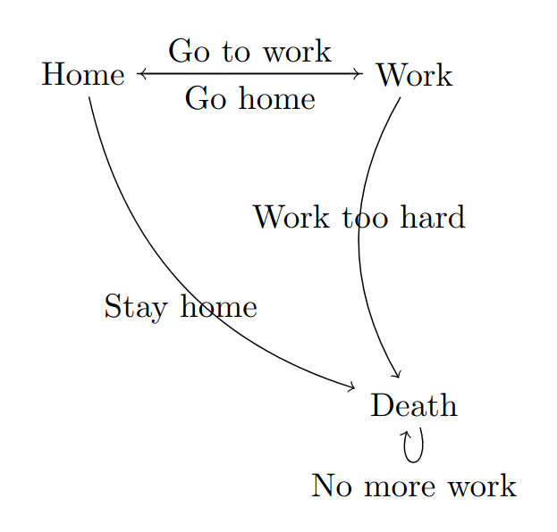

In my last blog I talked about a personal project of mine, writing a simple formal verification language for finite automatas, with learn as you go mindset.
In this blog post I want to talk more about the overall gist of what it would do. The basic Idea is that, Given a set of Automata Declarations and a set of statements about them, prove or disprove the verification statements.

Here is how a source program would look like within the specification of this language:
Automaton A1 {
states {q0, q1};
start {q0}
accept {q1};
inputset {"0", "1"};
transition q0:
on "0", goto q1;
on "1", goto q1;
transition q1:
on "0", goto q0;
on "1", goto q0;
}
Automaton A2 {
states {q0, q1};
start {q0}
accept {q1};
inputset {"a", "b"};
transition q0:
on "a", goto q1;
on "b", goto q1;
transition q1:
on "a", goto q0;
on "b", goto q0;
}
Verify A2 {
deterministic;
terminates {"000111"};
accepts {"000"};
equal {A1};
}
Automaton shows that a machine declaration is being made, Verify shows that verification statements are being declared.
The compiler should be able to take this as an input, and then for each verification statement, return the logical outcome of those statements.
deterministic -> is A2 deterministic? -> question of determinism -> True or False
terminates {"000111"} -> does A2 terminate on the string “000111” -> question of termination -> True or False
accepts {"000"} -> does A2 accept the string “000” -> question of acceptance -> True or False
equal {A1} -> is A2 equal to A1? -> question of equivalence of Automatas -> TRUE or False
So that’s the overall idea so far. I don’t want to think too much about the specification and usage too much so far.
It will all change as we go forward and learn more about different topics and methods in the Programming Language/ Compiler/ Automata Theory/ Formal Verification Spaces.
In the next blog post we’ll go over what lexical analysis is and we’ll be writing a lexical analyzer, using flex and cl-lex.